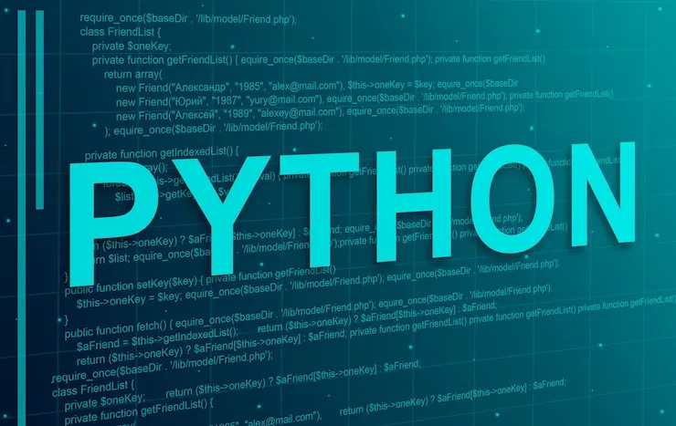

Por que usar?
Python é uma linguagem simples e funcional, que permite criar diversas coisas. como jogos, aplicativos de leitura, entre outros. Além de ser uma linguagem moderna e atual.

Aonde usar?
Pytho é uma linguagem que não se prende a um unico jeito de usar, tendo aplicações em jogos, sites, aplicativos do dia a dia, mas sua função que mais se destaca é a criação de IA.

Sua aplicação
Sendo usado em arquivos com a extensão '.py', o python pode ser obtido em seu site oficial: https://www.python.org/. Após a instalação, você pode começar a programar em alguma IDE como o PyCharm ou o Visual Studi Code.